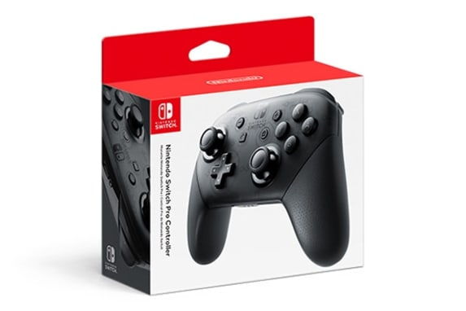
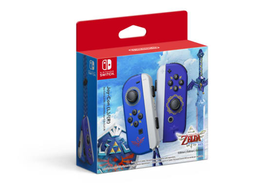
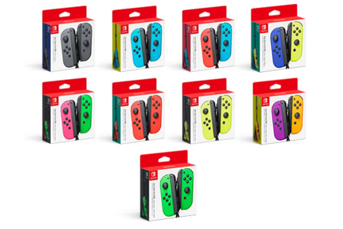

Accesorios
Pro Controller

Mando inalámbrico que recrea la forma de un mando tradicional, cómodo y perfecto para jugar durante periodos prolongados en los modos televisor y sobremesa. 69.99$
Comprar
Joy-Con™ (L)/(R) - The Legend of Zelda™: Skyward Sword HD Edition

Experimenta la inmersion al mundo de The Legend of Zelda™: Skyward Sword HD. Compatible con:
Nintendo Switch OLED Model, Nintendo Switch & Nintendo Switch Lite. 79.99$
Comprar
Joy‑Con™ controllers

Par de mandos Joy-Con, derecho e izquierdo, con dos correas de los mandos Joy-Con (grises). Según el juego, se pueden usar varios pares de Joy-Con para jugar en una consola Nintendo Switch con más jugadores.
Comprar
128 GB microSDXC Memory Card

Amplía la capacidad de almacenamiento de tu consola Nintendo Switch o Nintendo Switch Lite y guarda más juegos digitales en tarjetas microSD compatibles.
Comprar
Nintendo Switch Case

Pack que incluye una funda para tu consola Nintendo Switch o Nintendo Switch – Modelo OLED y un protector de pantalla. También incluye un compartimento donde puedes guardar hasta cinco tarjetas de juego y dos correas del mando Joy-Con. La funda también sirve de base para la consola.
Comprar